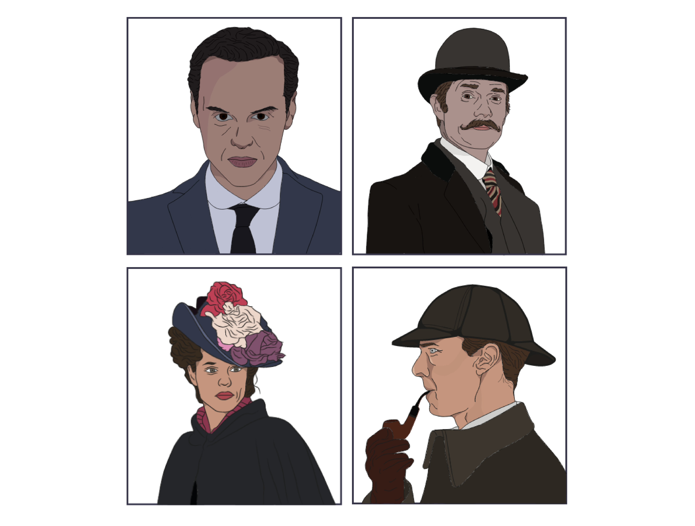

← Back to home
Heroes and Villains
Date: 2024 • To view the full design process, including user research, ideation, inspiration, and low- to high-fidelity mock-ups click here.

The Challenge
The way we consume classic narratives in digital spaces often lacks the immersive atmosphere and pacing that made the original stories timeless. When transitioning rich, atmospheric literature to the web, the essence of the "story" is frequently lost to generic layouts and static interfaces that fail to capture the tension and intellect of the source material.
The challenge was to leverage the duality of heroes and villains by transforming the world of Sherlock Holmes into a high-fidelity, narrative-driven digital experience. Rather than building a traditional website, the task was to treat the digital interface as a canvas for storytelling—using art direction, pacing, and visual rhythm to guide the user through a mystery that unfolds over time.
How might we:
- Translate the atmosphere of Victorian London into a modern, responsive design system?
- Use art direction and pacing to control the flow of information, mimicking the suspense of a detective novel?
- Balance deep research with interactive prototypes to ensure the narrative feels both authentic and functional?
Branding
Colour Palette
To ground the project in the atmosphere of Arthur Conan Doyle’s world, I developed a palette of muted, sophisticated tones drawn from both physical and cinematic history. This process involved hands-on research in antiquarian bookstores, analyzing the weathered textures and pigments of original book bindings.

Logo
In developing the brand identity, I chose Birch STD for its stylistic ties to the 19th century, making it the perfect anchor for both the logo and the headlines. To maintain a functional digital experience, I contrasted this with Mr Eaves Mod OT for long-form content.
The logo design was a study in hierarchy; rather than a static layout, I experimented with scale to create a more 'designed' feel. Making ‘Heroes’ and ‘Villains’ the focal points created a structural motif that I later applied to the rest of the interface. This consistent use of exaggerated scale and intentional pacing helped unify the visual language across all screens.
Illustrations
To maintain visual unity across the platform by creating a custom brush and tracing over character reference photograph, I was able to produce a consistent 'illustrated' aesthetic. This stylized approach allowed for complete control over the color palette, ensuring that each character fit with the broader UI.

User Interface
Designing the user flow provided a unique opportunity to merge narrative pacing with UX best practices. I approached the architecture through a storytelling lens. However, I remained grounded in core usability principles, balancing immersive 'story moments' with intuitive navigation and clear information hierarchy to ensure the creative concept never hindered the user's journey.

Product Walkthrough
Here is a walkthrough of the project in action: